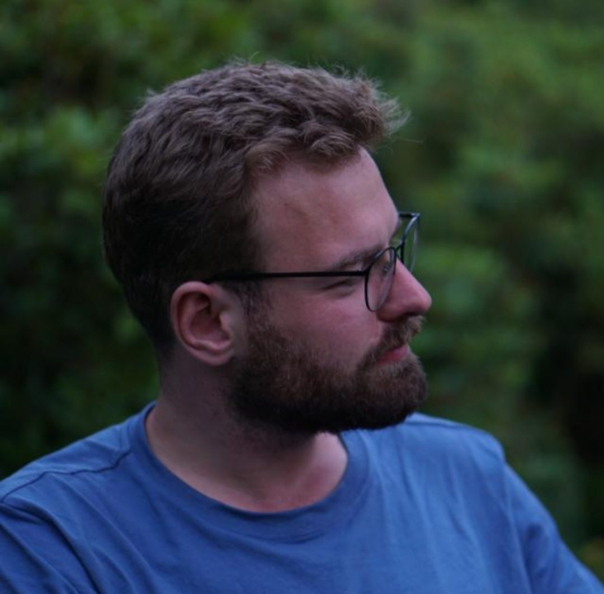
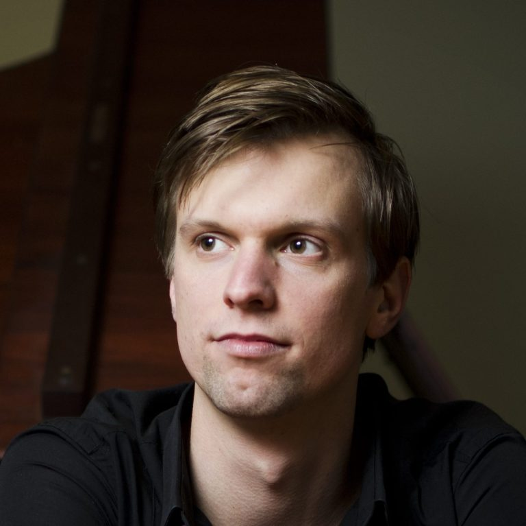

Over ons
Onze faciliteiten zijn op het moment in aanbouw.
In de zaal en studio zijn we aan het proefdraaien. Door een geslaagde
crowdfunding via VoorDeKunst zijn we druk bezig met het realiseren van een foyer

Ellen Corver
Ellen Corver is niet alleen bekend geworden door haar uitvoeringen van de werken van Debussy, Ravel, Brahms, Beethoven en Haydn, maar ze heeft ook naam gemaakt als vooraanstaand vertolkster van hedendaagse muziek. Zo voerde ze pianoconcerten uit van John Cage, György Ligeti en György Kurtág. Klaas de Vries en Theo Verbey schreven beiden een pianoconcert voor haar.
Een jarenlange samenwerking met Karlheinz Stockhausen resulteerde in de eerste volledige registratie van zijn veertien Klavierstücke voor piano solo, uitgebracht op het eigen platenlabel van de componist.
Met het Osiris Piano Trio deed zij vijf continenten aan met meer dan tachtig pianotrio’s van uiteenlopende componisten op het repertoire. Haar passie voor kamermuziek was de inspiratie voor vele samenwerkingen met een keur van musici, onder wie sopraan Charlotte Riedijk en klarinettist Lars Wouters van den Oudenweijer. Met mezzosopraan Gerrie de Vries heeft Ellen op het gebied van muziektheater de krachten gebundeld.
Sinds 1994 is Ellen als hoofdvakdocent piano verbonden aan het Koninklijk Conservatorium in Den Haag. Ellen Corver: “Jaarlijks studeren er van het Koninklijk Conservatorium veel goede pianisten af. Die lopen na hun studie tegen het probleem aan dat er te weinig kwalitatieve studio’s zijn waarin ze door kunnen gaan met het zich verder ontwikkelen. Het HaagsPianoHuis voorziet in een grote behoefte.”
Emiel Janssen

Emiel Janssen is op volgorde van groot naar klein pianist, pianodocent, pianotechnicus, projectontwikkelaar en in een enkel geval aannemer.
Als pianist vormt hij samen met zijn volle neef Tim Sabel Duo Durville. Dit duo voert bijzondere programma’s uit met bijvoorbeeld extended techniques of geprepareerde instrumenten. Dit kan door de twee eigen instrumenten die ze meenemen. Deze instrumenten worden onderhouden en gestemd door Emiel.
Als docent geeft Emiel pianolessen op het Koninklijk Conservatorium aan HBO-studenten. Jarenlang was hij actief als pianodocent op de muziekscholen van Delft en Woerden.
Als allround pianoman stemt en reviseert hij ook instrumenten. Zijn veelzijdigheid en gevoel voor logistiek zet hij ook in als coördinator huisvesting en instrumentarium op het Koninklijk Conservatorium. Bij een intensief vervangingstraject selecteerde hij met een klein gezelschap een groot aantal nieuwe Steinway en Yamaha vleugels. Hij studeerde op hetzelfde Koninklijk Conservatorium bij Marcel Baudet, Paul Komen en Ellen Corver.
Emiel Janssen: “Omdat een pianist altijd afhankelijk is van het aanwezige instrumentarium in een repetitieruimte of concertzaal, zet ik mij in voor het HaagsPianoHuis. Hier is de piano meer dan het meubilair of het gemeenschappelijk goed. Altijd goed gestemd en in een ideale akoestiek.”
Tim Sabel

Tim Sabel is pianist in Kluster5: het Haags ensemble dat met uiteenlopende projecten nieuwe muziek bereikbaar maakt. Daarnaast speelt Tim samen met volle neef Emiel Janssen in Duo Durville.
Als pianodocent is hij werkzaam aan het Koninklijk Conservatorium bij de School van Jong Talent en in de HBO-opleiding. Daarnaast is muzikaal leider bij De Wijkmuzikanten, waar hij samen met regisseur Ginette Puylaert muziektheater maakt voor en met wijkbewoners. Op dit moment werkt hij samen met Opera Zuid aan de BuurtOpera Malpetuis.Tim Sabel: “In mijn werkzaamheden als pianist ben ik altijd op zoek naar een fijne repetitieruimte met goed instrumentarium. Het HaagsPianoHuis gaat dat bieden en laat voor de musicus niets meer te wensen over.”